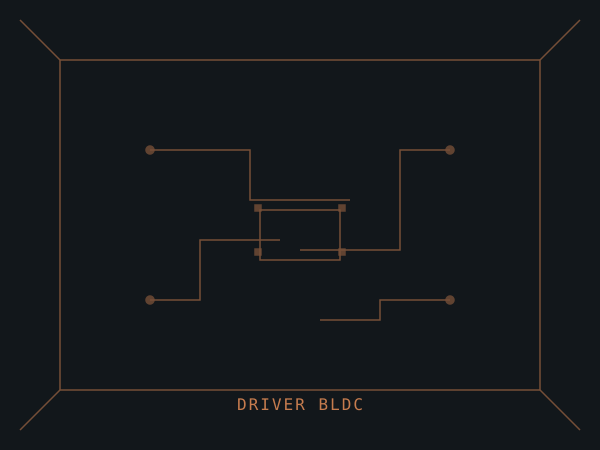

Driver de motor BLDC
Placa de controle para motores brushless com sensoriamento de corrente e comutação trapezoidal. Descreva aqui o problema que o projeto resolve, as decisões de projeto e os desafios que você enfrentou ao construí-lo.
- MCUSTM32F103
- Tensão12–24 V
- Corrente máx.15 A
- InterfaceUART / PWM